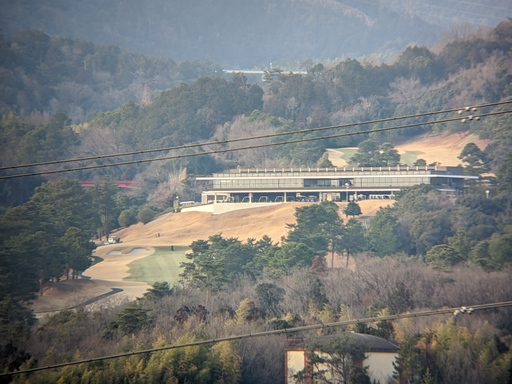

コーワの三脚アダプターが届いたので早速 KOWA SVⅡ 42-10 と SVBony のスマスコアダプター、Google Pixel 5 でスマスコのテストを実施してみた。
上が Google Pixel 5 のカメラを 1x に設定して写したもの。

次に Google Pixel 5 のカメラを 2x に設定して写したもの。
さらにに Google Pixel 5 のカメラを 3x に設定して写したもの。
ついでに試しに Google Pixel 5 のカメラを 7x に設定して写したもの。
全画像になんとなく乳白色がかっているのはそういう気象条件だったせい。つまりちょっと大気が霞んでいるときに遠方の風景を切り取ったせい。
なので条件のいいときにあまり遠すぎない野鳥を撮ってみたらどうなるのかはわからない。ネットにあるように鮮明に写そうと思うならよほど近づくか、SVⅡ など比べ物にならない光学性能のフィールドスコープが必要になるかも。
とはいえスマスコにお金を湯水のごとく突っ込もうと思えないので、スマスコ関連の買い物はこれくらいで終わり。
遠からず耳原公園あたりに出かけて何か撮ってみようかと思う。そろそろハシビロガモやヒドリガモなどのカモたちがいなくなる時期だと思うので。